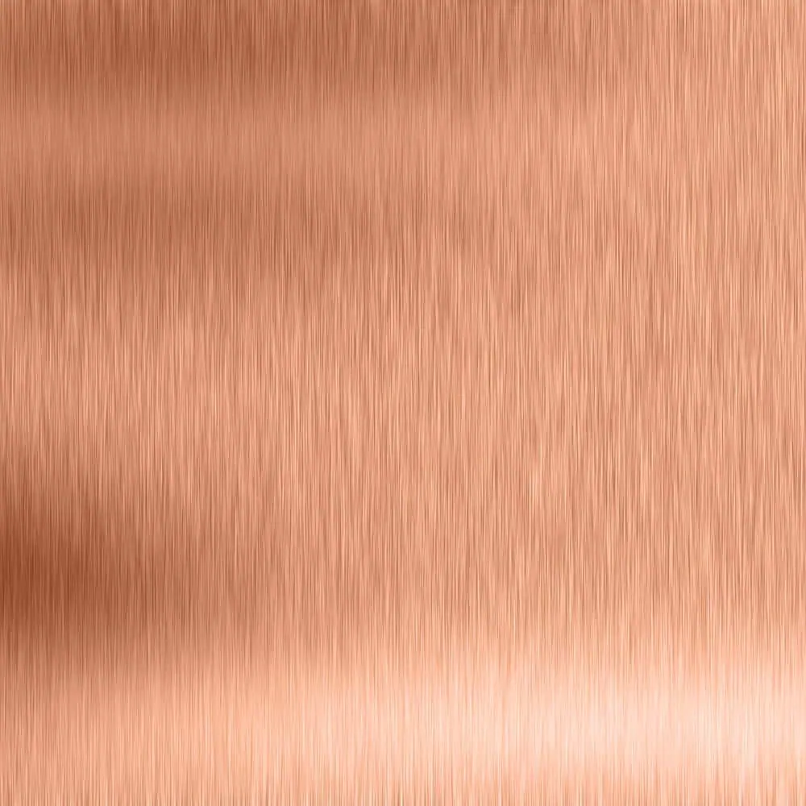

Copper Splashback Tiles
Copper splashback tiles are the perfect way to complete a kitchen. Bold, yet chic, colourful but not too overbearing and ideal for the purpose. What’s not to love? Copper splashback tiles are available as natural copper or aged copper . They are created by hand to your exact specifications so you can be sure you’re getting exactly what you ordered. You’ll often find copper splashback tiles in salons, restaurants, open kitchens, bistros, themed restaurants, pubs and the home. Wherever you want a touch of style, copper delivers! Every splashback tile is laser cut to size and shape, artificially aged, finished to your exact requirements. They are then protected by a tough, transparent lacquer to ensure they always look amazing!

Please note: our pieces are suitable for use behind non-steam cookers only. It is important that the material is not exposed to direct contact with steam or excessive heat, as this will damage the surface finish.
Contact Halman Thompson for a fast, free copper splashback tile quotation!
Choose a finish


Cut to size
Each of our bespoke finishes can be purchased in sheets cut to your size, perfect for your project.
- Pricing includes delivery and turnaround time is just 5-8 weeks
- Each piece is coated in a gloss finish lacquer that prevents the sheet from further aging

Ready to go
We can provide bespoke cut metal with each of our finishes being wrapped around wood and lacquer finished. Please get in touch for a bespoke quote .
Copper splashback tile finishes
You can order your copper splashback tiles in a number of beautiful finishes:
- Ayrshire finish – Heritage-style aged copper finish with a deep speckled effect
- Cheshire finish – Warm and inviting aged copper finish with a simple, elegant appeal
- Hertfordshire finish – Complex aged copper finish with verdigris elements throughout
- Natural copper finish – The lustrous metal at its natural best with long-lasting appeal
- Northumberland finish – Swirls of aged copper and verdigris to deliver an ever-evolving look
Handcrafted copper splashback tiles
All copper splashback tiles from Halman Thompson are created by hand by expert craftspeople. Each is lovingly designed, cut, aged and finished to deliver the timeless appeal you’re looking for.
The copper splashback tiles begin life as copper sheets. We laser cut them to the exact size and shape before artificially aging them using a specialist process.
Popular shapes for copper splashback tiles include squares, rectangles, hexagons, triangle, diamond and fish scale. You can choose any shape you like using our simple order form .
Once the metal reaches the desired look, we stop the ageing process and seal the tile in a tough, transparent lacquer.
Natural copper tiles can also be optionally sealed in lacquer to protect the look.
Installing and caring for your copper splashback tiles
Installation is simple. Prepare the surface, use adhesive or epoxy and affix into place. Arrange into your desired design and allow it to dry.
Once dried, you should have a beautiful statement piece perfect for any kitchen!
Copper splashback tiles require minimal maintenance. Simply wipe down with a soft cloth and warm soapy water. That’s it.
Full cleaning and care instructions will be provided with every order.
Contact Halman Thompson for a free copper splashback tile quote!
Examples of our copper splashback tiles work


If you can dream it, we’ll make it.
Bars, balustrades, staircases, worktops, cladding and pieces that don’t have a name yet. Our designers and craftspeople work in brass, copper, zinc and steel, and alongside wood.